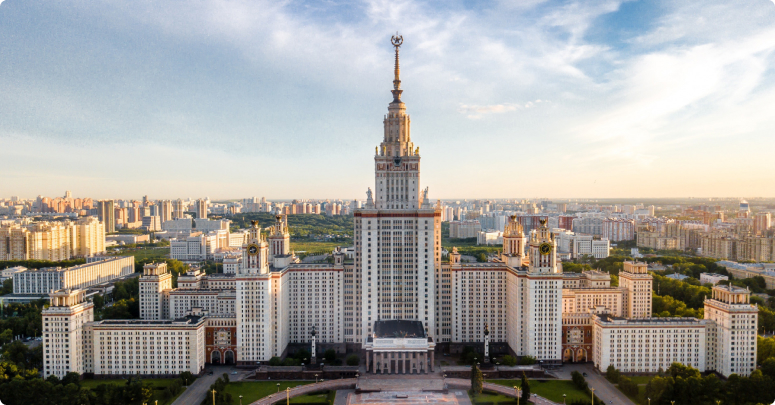
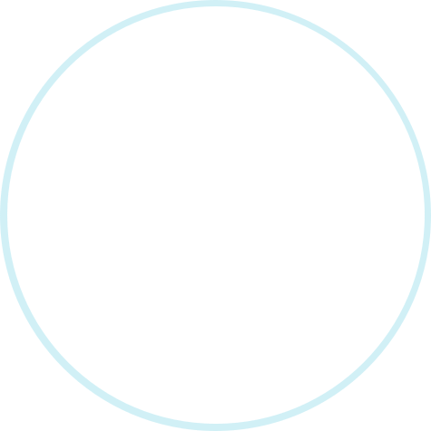
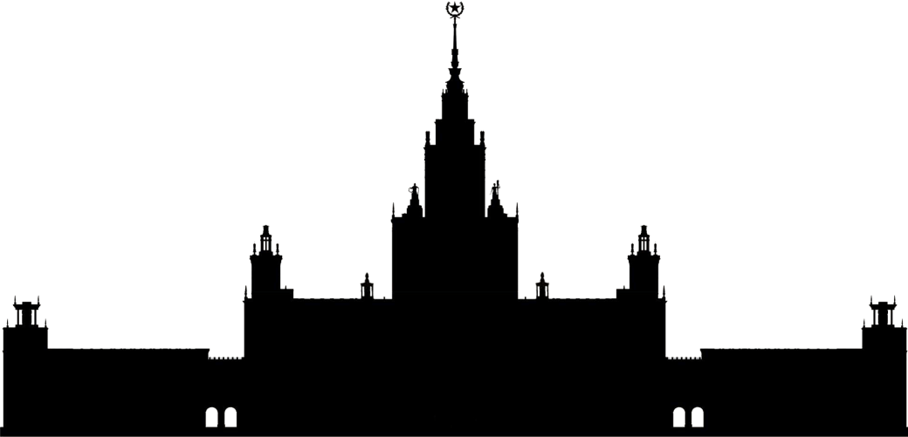
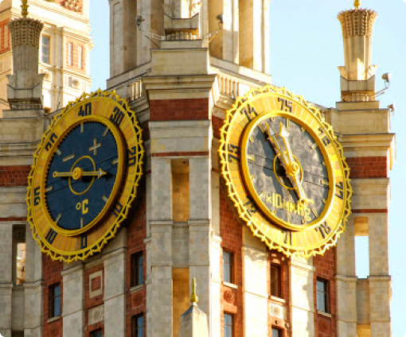
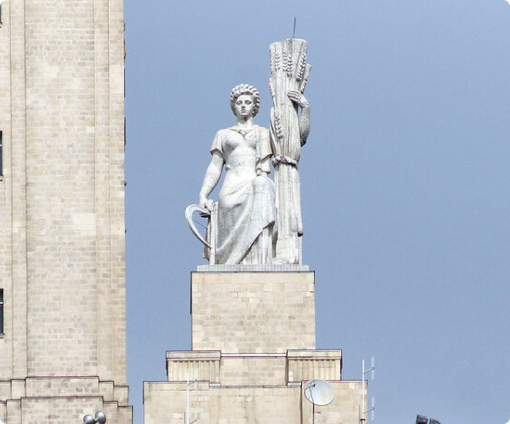
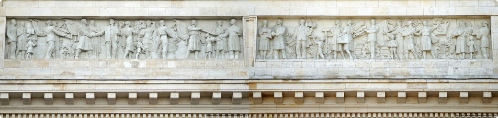

Москву невозможно представить без сталинских высоток — семи монументальных небоскрёбов, построенных в 1940–1950-х годах. Здания часто называют «Семью сёстрами» — они кажутся настолько похожими, что даже коренные москвичи
не всегда отличают одну высотку от другой. Но «сёстры» — не значит близнецы.
Рассказываем, как распознать высотки по силуэту и архитектурным деталям.
История создания
После войны МГУ оказался в административном кризисе: 22 корпуса в центре Москвы были слишком тесны и нуждались в ремонте. Сталин решил перенести университет
на Воробьёвы (в то время — Ленинские) горы и построить для него новую высотку. Проект разработал неоклассицист Борис Иофан. Архитектор придумал новаторскую планировку в форме буквы Ж: благодаря ей удалось удалось добиться равномерного освещения всех корпусов и логично зонировать учебные, хозяйственные и жилые помещения. Правда, лично воплотить проект в жизнь Иофан не смог — архитектора сместили с должности, так как он отказался перенести здание с края склона в глубь плато. Руководителем строительства назначили Льва Руднева. Чтобы ускорить процесс, на стойку были переброшены военные части и отряды заключенных. Главный корпус построили за четыре года и открыли 1 сентября 1951 года.

Главное здание МГУ
Годы строительства: 1949–1963
Высота со шпилем: 240 м
Этажность: 42
Где стоит: улица Ленинские горы, метро «Воробьёвы горы», «Университет»

Как узнать по силуэту
Силуэт здания МГУ напоминает корону с тремя широко расставленными заострёнными зубцами.
В центре — доминирующая высокая башня
со шпилем, по бокам — два более низких корпуса-крыла, увенчанные башенками поменьше. Высотную часть здания можно опознать по трём ярусам: массивному нижнему, вытянутому среднему и расположенной под шпилем ротонде.
Средний ярус обрамляют четыре восьмиметровые скульптуры, которые издалека кажутся похожими
на конусы. Кроме этого, МГУ — единственная сталинка, окружённая лесным массивом: остальные шесть «сестёр» находятся в плотно застроенном историческом центре Москвы.
Из семи сталинок — эта самая высокая.


На башнях боковых корпусов расположены барометр, термометр и самые большие часы в России.

Ризалиты центральной башни украшены четырьмя статуями молодых рабочих и колхозниц работы скульптора Михаила Бабурина.
Ризалит — часть здания, выступающая вперёд за основную линию фасада по всей высоте.

Аттик над главным входом оформлен барельефом «Народ-созидатель» скульптора Георгия Мотовилова.